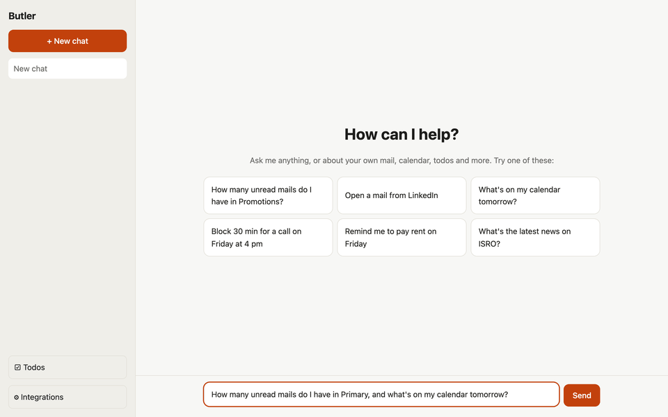
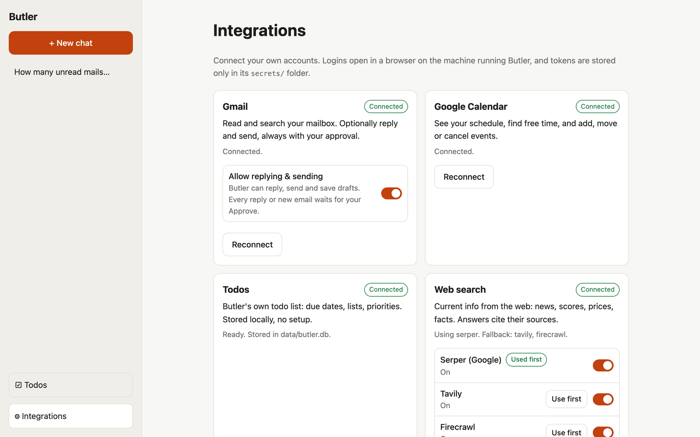
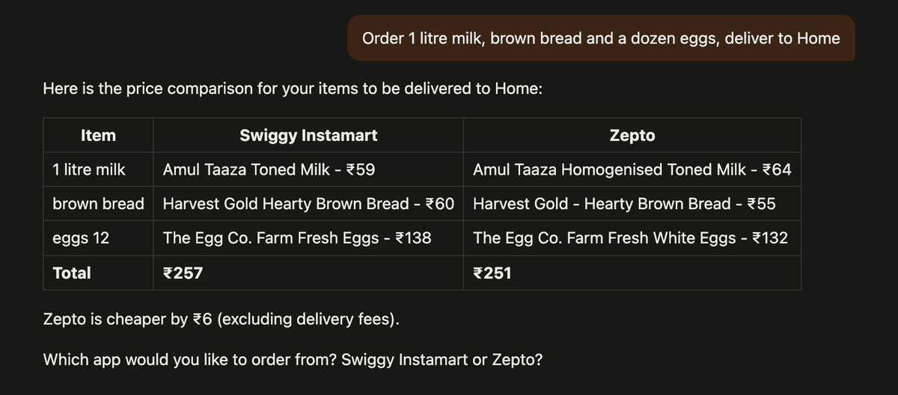
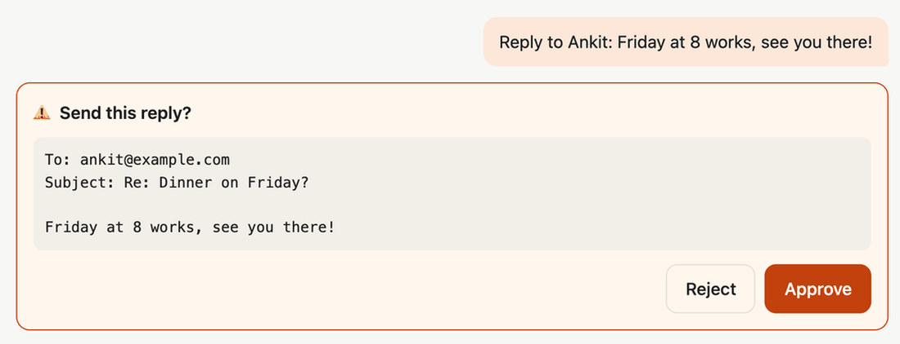
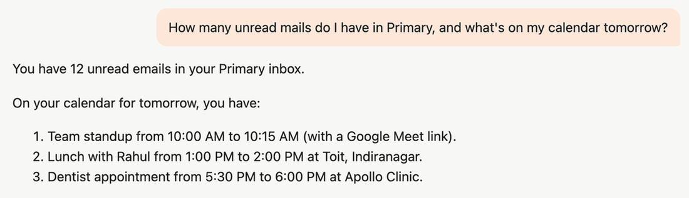
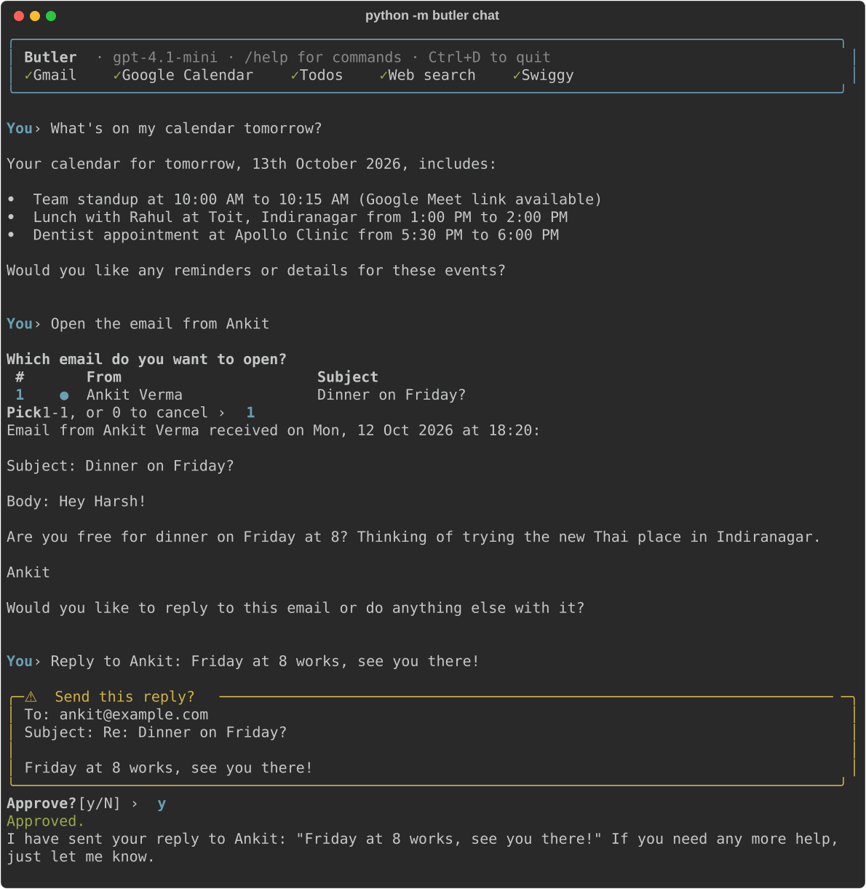
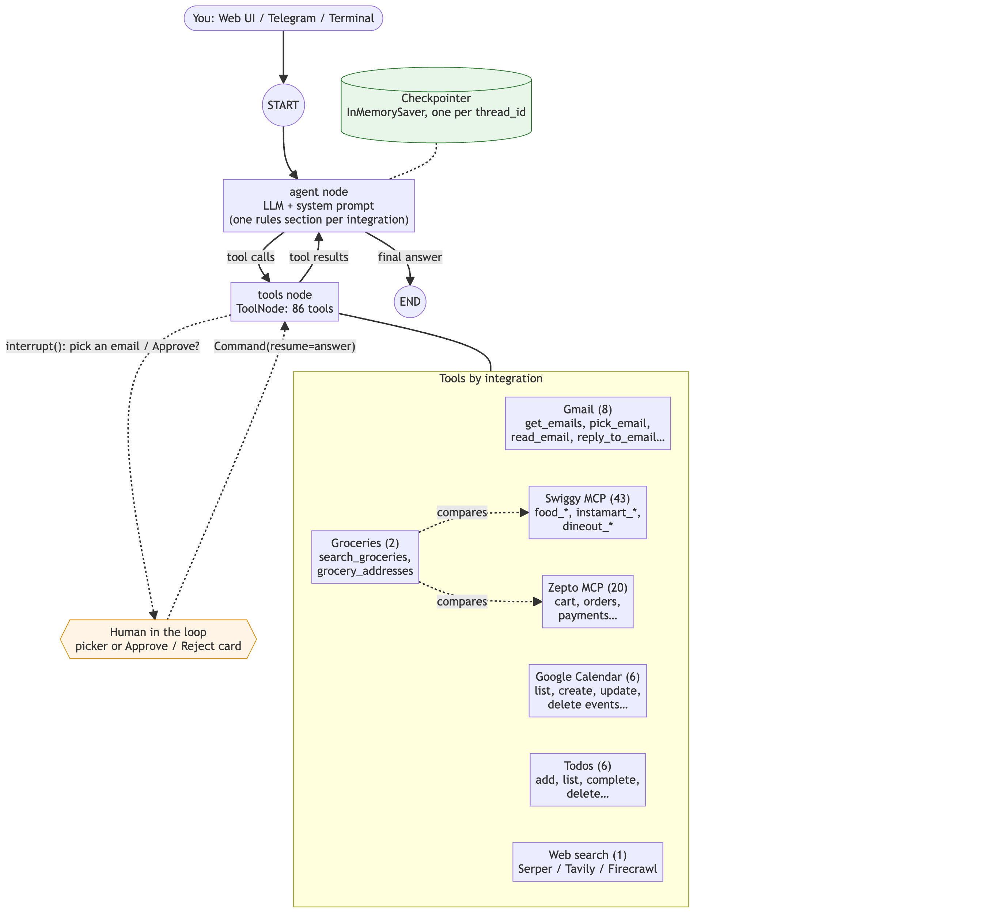

"How many unread mails in Primary? Open the one from Ankit."
Open source · Self-hosted · MIT
Your personal AI assistant that asks before it acts.
Butler reads your mail, runs your calendar and todo list, searches the web, and orders food and groceries, all from one chat. It runs on your own machine, with your own accounts.

Just ask
One agent with every tool. It picks the right ones, and can use several in one answer.
Calendar
"What's on tomorrow? Block 30 minutes on Friday at 4 for a call."
Todos
"Remind me to pay rent on Friday, it's important."
Web search
"What's the score in India vs Australia?" Answers cite their sources.
Groceries
"Order milk, bread and eggs, wherever it's cheaper."
Food
"Find veg biryani near my office and add it to my cart."
Dine out
"Book a table for 2 tonight in Indiranagar."
Replies
"Reply to Ankit: Friday at 8 works." Shown to you before it's sent.
Connects to the apps you use every day
Each integration is a plugin: a folder plus one line in a registry. Connect your own accounts from the Integrations page.
- 📬GmailRead, search, reply
- 📅Google CalendarEvents, free time, Meet
- ☑️TodosBuilt in, no setup
- 🔎Web searchSerper · Tavily · Firecrawl
- 🍔SwiggyFood · Instamart · Dineout
- 🥛ZeptoGroceries in minutes

Standout feature
Compares Instamart and Zepto for you
Ask for groceries without naming an app, and Butler searches both at your delivery address, then puts the same products side by side.
- Matches the same brand and pack size on each app
- Per-unit prices, so different pack sizes still compare fairly
- Basket totals and which app is cheaper
- Asks your delivery address first, and you pick the app

Safety first
Nothing happens without your Approve
Sending an email, placing an order, booking a table, changing your calendar: Butler pauses and shows you exactly what will happen.
- Every reply and new email shows To, Subject and the full text
- Orders show the app's own preview: items, total, address
- Sending mail is off until you switch it on
- Reject, or just type something else, and nothing changes

Three ways to talk to it
The same agent behind all three. Use whichever is closest.
🌐
Web UI
Streaming answers, saved chats, pickers and approval cards, a Todos page, light and dark mode, and it works on your phone.

⌨️
Terminal
Live Markdown replies, numbered email pickers and highlighted approval prompts, right in your shell.

✈️
Telegram
Your assistant on your phone, anywhere. Inline buttons for pickers and approvals.
- Locked by default: only user IDs you allow
- Orders and payments only for the owner
- Same tools as the web and terminal
- Type yes / no, or tap ✅ Approve / ❌ Reject
Under the hood
One LangGraph agent, 80+ tools
An LLM in a loop with every integration's tools. When a tool needs you, the graph pauses with interrupt() and resumes with your answer.
- LangGraph agent with human-in-the-loop
- MCP for Swiggy and Zepto, with OAuth 2.1 + PKCE
- FastAPI backend, streaming over Server-Sent Events
- React + Vite web UI · python-telegram-bot · rich terminal
- SQLite for chats and todos
PythonLangGraphLangChainMCPFastAPIReactTypeScriptSQLite

Private by design
🏠
Runs on your machine
No Butler server and no account to create. You clone it and run it.
🔑
Your own logins
You connect your own Google, Swiggy and Zepto accounts. Tokens stay in a local secrets/ folder.
🔒
Locked down by default
The web UI listens on localhost, Telegram answers nobody until you allow them, and mail sending starts off.
Make it yours
Butler is open source under the MIT license. Clone it, connect your accounts, or add an integration of your own.
git clone https://github.com/subhamyadav580/butler-ai.git
cd butler-ai
python -m venv .venv && source .venv/bin/activate
pip install -e .
cp .env.example .env # add your OPENAI_API_KEY
python -m butler chatThen connect Gmail, Calendar, Swiggy or Zepto: the README walks you through it.
Star on GitHub